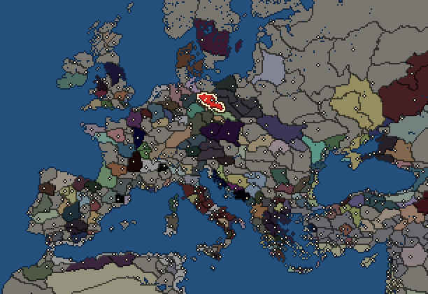
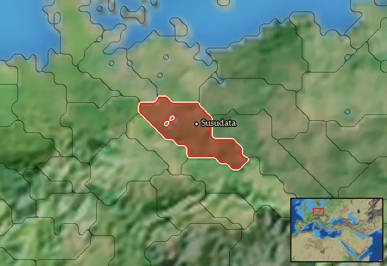

Semnones

- Difficulty Difficult
- Germanic culture
- Believes
 Germanic
Germanic - 1 settlement
- Capital Susudata
- 4,600 manpower
- 2 characters
- 17 faction units
- 447 regional units
The campaign brief
"The Suebi are not a single nation like the Chatti and Tencteri, for the Suebi hold dominion over the greater part of Germania. Even though the Suebi are joined together into a community, they are still separated into distinct names and nations." – Tacitus
Men! Suebi! Look upon this horde of Celtic invaders swarming across the Elbe. Are you all as amused as I am? These arrogant Gauls are so confident in victory that they recklessly forfeit their only route of retreat! No doubt they think themselves merely up against a hastily assembled levy from a few local nations, which they believe they can easily brush aside with their wild charge. Little do they know that they face the formidable fighting force of our freshly formed Suebian Federation, and that their Celtic onslaught will break upon our shields like waves upon solid rock. Tomorrow, they will no longer be an army, but a macabre procession of corpses for the Elbe to spew out into the ocean. Yes, the only way they ever return to Gaul again, is if the ocean tides wash them up on those putrid shores.
Warriors, while we are waiting for our dear guests to finish digging their own graves, let us remember why we are gathered here today to do battle as one Suebi. These Celts have once again come unto our lands to rob and murder, like so many times before. Even though they possess wealth and grain in abundance, they crave what little we have as well. Last time they came here, they only encountered sporadic resistance from a handful of small and scattered tribes. All we could do back then was to buy enough time to evacuate our families and livestock to hiding places in the hills and forests, while shamefully abandoning our thorps and fields to be despoiled and devastated by those boorish invaders. When we returned home, what little grain we had was gone, stolen. That winter, more of our people died from starvation than ever fell by Gaulish blades. Yes, the price of defeat is bitter indeed, but even that is preferable to submission. Do not think the Marcomannians and Quadians wise in purchasing peace through detestable tributes to the Celtic Boians. Such cowardice is not only unbecoming of our common Elbe-blood, but in surrendering freedom for safety, they are scarcely fit to be called men at all!
Speaking of slaves, behold the march of the craven. Behold this kennel of whipped dogs, staggering up the riverbank as I speak. These are weaklings from the Westlands, whom the Celts levy from submissive peoples like the Chatti, Chauci and Cherusci. Even if these base curs share our language, they got none of our spirit. Look at their meekly bowed heads. Submission to the Celtic yoke have reduced them to slaves at their masters’ beck and call. Make no mistake men: These poor fools died a long time ago, let us escort their shambling corpses back to their tombs!
As for the rest of our foe; they are no match for our courage and cohesion. Yes, the Celts outnumbers us by a large margin. But the vast number of the enemy is worthy only to be despised, seeing that they present a chaotic rabble against our well-ordered army. Yes, the Gauls may completely outclass us in terms of arms and armor. But their fine swords and chainmail will only add to their shame, given that their owners are cowards who will run from braver men who possess neither blades nor armor.
Spear brothers of the Suebi; a bumbling band of cowardly Celts and their submissive slaves shall soon stumble into our spear wall. Forgive me, when the moment comes, forgive me that I give you no worthier foe to vanquish today. But please, I beg of you, try to not die of laughter as we throw their worthless bodies into the Elbe.
I myself will laugh at the Gauls for bringing about the instrument of their own destruction; for it was their ceaseless raids and invasions across the Elbe that forced us to band together. We are still many nations, but now we are also one Suebi Federation, and will remain so until all our enemies are grinded into dust. A great Federation stretching from the Elbe in the West, all the way unto the Oder in the East; and from the Marcomannians in the South, up to the Langobards in the North. On this field today, we stand as an invincible host of three thousand men, mustered from the whole of our vast domains. Such as you over there, from the Elbe. Your hamlet was among the first to burn last time the Celts came around. But it will not burn this time! And you, from the northern border. I know that our Langobard neighbors often raid your lands. We will deal with them next! And whoever else dares to invade us. Rest assured that the mighty Suebian army stands vigil over all members of the Federation. Those men over there, from the Oder, can testify how we gave a bloody nose to the Lugians attacking their lands!
You see, brothers: I know you, and all your concerns. I ask you in return: Do you know me? I am Erminus, King of the Suebi Federation! And a brother-in-arms to every Suebi warrior of this valiant Federation! I will personally lead the cavalry charge against the enemy horse to perform my royal duty of claiming first blood. And I challenge any man in this army to slay as many Gauls as I will! So, let no man doubt my mettle or martial prowess. As for my abilities as a commander, they should be well known to all of you who have served under me in the past. Suffice to say: I am called the “Scourge of Lugia” for a reason. I led the very first Federation counterattack against the Lugians invading us from across the Oder, and wrought so much destruction upon them that they will think twice about ever threatening us again! Yet, the fury we unleashed upon the Lugians will pale in comparison to the terrible vengeance we will wreak upon these invading Gauls, who dare to tread the sacred soil of this Suebia! Their annihilation will be so utter and total that word will not even reach Gaul about what happened to their army.
Ah, about time; all the Gauls are finally across the river and are now advancing towards our lines. Good, I was tired of waiting. Infantry, form spear-wall! Cavalry, on me!
Yes, captain, the enemy cavalry outnumbers us ten to one, so we will not counter-charge until… wait, do you see that? The enemy cavalry uses saddlecloth. We can take on any number of such effeminate weaklings! Chaaaaaarge! Run faster horse, we got weaklings to hunt! I am Erminus, King of the Suebi, and I will sweep all saddlecloth-using scum from our sacred Suebian soil!
Starting diplomacy
Allied with (1): Cimbri
Trade agreements with (1): Cimbri
At peace with every other faction.
Like every faction, it is also at war with the  Free Peoples, who hold every settlement no faction does.
Free Peoples, who hold every settlement no faction does.
Reforms
For every faction: Military innovations have arrived!, Second wave of military innovations have arrived!.
Starting settlements
Semnones begins with 1 settlement and 4,600 manpower.
What is already built in each settlement
Susudata, in Semnonia: Governor's Villa, Wooden Palisade, Forest Gardening (Adaptive husbandry), Cisterns (Sanitation), Region Information Scroll, Roads, Local Barter, Basic Armoury, Shrine, Hunting Grounds (Rural)
Homeland
Semnones's homeland is 1 region. Only there can it install the Homeland government (more on homelands).

Starting characters
| Name | Role | Age | Name | Role | Age | ||||||
|---|---|---|---|---|---|---|---|---|---|---|---|
| Erminus | General | 37 | Gaiobomarus | General | 17 |
Faction mechanics
From the game's own guide. See also the other game guides.
Military reforms
The Semnones have two reforms.
Semnonian reforms 1 requirements: Fight 25 battles against civilized factions.
Unlocks: Warband (Frameae), Outsider Slinger Rabble, Mounted Warband (Frameae)
Suebian reforms 2 requirements: Fight 50 battles against civilized factions.
Unlocks: Bodyguard (Angons and Swords), Dismounted Bodyguard (Swords and Angons), Mounted Warband (Angons and Swords), Flying Warband (Angons and Spears), Warband (Angons and Swords)
Units you can recruit
The same as in the main campaign.